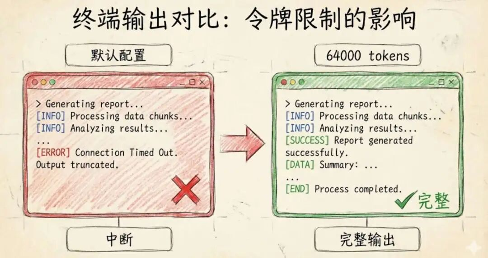

回想一下，用Claude Code其实已经蛮久了,总体还是挺满意的，但有时候它会进入一种我称其为"敷衍"的模式，让人比较抓狂。
比如写代码写到一半就告诉我完成了,复杂问题总是给浅层答案,架构建议蜻蜓点水。我甚至怀疑是不是 Opus 4.5 被吹过头了。
直到最近,我在查阅官方文档时,才意识到:问题不在模型,在我的配置。
改了两行设置,整个体验彻底变了。
就像给一个聪明人足够的思考时间和空间,让他把想法写完整、想清楚。这才是 Claude Code 本该有的样子。
两个参数,解锁完整实力
官方文档里就有,但藏得很深,几乎没人配。
打开或创建这个文件:~/.claude/settings.json
粘贴这段配置:
{
"env": {
"CLAUDE_CODE_MAX_OUTPUT_TOKENS": "64000",
"MAX_THINKING_TOKENS": "31999"
}
}就这样。保存,重启 Claude Code,世界不一样了。
第一个参数:让它说完整的话
CLAUDE_CODE_MAX_OUTPUT_TOKENS 控制 Claude 一次回答的最大长度。
默认值? 根据 Anthropic 官方文档,早期版本默认值很保守。你经常看到代码写一半就"请继续补充"的原因就在这里。
改成 64000 之后:
• 大型代码重构?一口气写完 • 整个文件重写?没问题 • 多步骤计划 + 完整实现?都能输出
重点:这不是让它废话更多,而是给它空间把思路表达完整。

第二个参数:给它时间深度思考
MAX_THINKING_TOKENS 更有意思。
Claude 有一个隐藏的"思考阶段"叫 extended thinking。这些 token 不会出现在最终答案里——它们是 Claude 在"脑子里"做的事:
• 探索多种解决方案 • 分析边界情况 • 比较不同方案的利弊 • 在回答前发现并修正自己的错误
官方原话是:
Extended thinking uses a token budget that controls how much internal reasoning Claude can perform before responding.
默认情况下? 这个预算非常有限,甚至接近于 0。
设成 31999 之后:
这个值是上限,不是强制消耗。Claude 不会每次都用满 31999 个 token。
但当问题足够复杂时,它终于有空间去"好好想想"了。
你移除的是天花板,不是在浪费算力。
"ultrathink" 背后的真相
你可能在社区里听过 Claude Code 的 "ultrathink" 关键词。
根据 Anthropic 官方文档和开发者分析,事情是这样的:
Claude Code 有内置的思考等级:
• 在 prompt 里写 think→ 分配 4000 tokens 思考预算• 写 think hard→ 分配 10000 tokens• 写 ultrathink→ 分配 31999 tokens(最大值)
这些关键词会触发 extended thinking 模式,让 Claude 在回答前有更多内部推理空间。
重点来了:
当你设置 MAX_THINKING_TOKENS=31999 之后,相当于随时待命了 ultrathink 的能力。
• 复杂问题来了?Claude 可以深度推理 • 简单问题?它照常快速回答,不浪费 token
你不需要每次都在 prompt 里写"ultrathink",系统会根据任务复杂度自动分配思考资源。
⚠️ 重要提示: "ultrathink" 这类关键词只在 Claude Code 里有效,在 claude.ai 网页版或 API 调用中无效。这是 Claude Code 专属的预处理机制。
查看 Claude 的思考过程(可选)
Claude Code 允许你查看这个隐藏的思考过程。
按下 Ctrl + O(或 Mac 上的 Cmd + O)
这会打开 verbose 模式,让你看到 Claude 的内部推理:
• 它考虑了哪些方案 • 它如何权衡利弊 • 哪些想法被淘汰了,为什么
这对学习和调试特别有用。你能看到一个高级工程师是怎么思考问题的。
有 vs 没有:实际差别
没开 extended thinking:
"这是一个简单的解决方案,大多数情况应该能用。"
开了 extended thinking:
Claude 在回答前会默默完成:
1. 考虑 3-5 种实现方式 2. 评估性能 vs 可读性的取舍 3. 处理边界情况和异常场景 4. 淘汰掉较弱的方案 5. 最后给你那个最靠谱的答案
你只看到干净的结果。那些"纠结"的过程,它帮你做完了。
这才是重点。
什么时候这个配置最有用?
根据我这几周的实践,以下场景收益最明显:
1. 大型代码库重构
需要理解上下文和依赖关系,默认配置容易遗漏细节。
2. 架构决策
需要权衡多个因素,extended thinking 能帮你看到完整的思考过程。
3. Agentic 工作流
需要 Claude 自主规划和执行多步骤任务。
4. 安全敏感逻辑
不能出错的代码,值得让 Claude 多想想。
5. 非平凡 debug
神秘的 bug 需要系统性排查,不是简单的"试试这个"。
6. "先想后写"类任务
思考比速度更重要的工程工作。
一句话:凡是值得你认真对待的工程任务,都值得开这个配置。
避坑指南:不要无脑 ultrathink
看到这里,你可能想:"那我以后每个 prompt 都加 ultrathink!"
别这么做。
根据 Claude Code 社区的最佳实践:
• 简单任务用默认:重命名变量、添加注释、基础 bug 修复 • 中等任务用 think hard:API 设计、代码重构• 复杂任务才用 ultrathink:架构决策、关键迁移
ultrathink 会:
• 消耗更多 token(成本更高) • 响应时间更长(2-3 倍) • 对简单任务反而可能过度思考,降低准确性
这是手术刀,不是锤子。
实测数据参考
根据 Amazon Bedrock 的官方文档建议:
对于 Bedrock 用户,推荐的配置是:
• CLAUDE_CODE_MAX_OUTPUT_TOKENS=4096(Bedrock 有特殊的 token 限制机制)• MAX_THINKING_TOKENS=1024(平衡思考深度和响应速度)
对于 Anthropic API 直连用户:
• CLAUDE_CODE_MAX_OUTPUT_TOKENS=64000(Sonnet 4.5 支持)• MAX_THINKING_TOKENS=31999(最大思考预算)
你需要根据自己的使用场景和预算来调整。
完整配置示例
这是我目前在用的配置,供参考:
{
"env":{
"CLAUDE_CODE_MAX_OUTPUT_TOKENS":"64000",
"MAX_THINKING_TOKENS":"31999"
},
"model":"sonnet",
"permissions":{
"deny":[
"Read(.env)",
"Read(.env.*)",
"Read(./secrets/**)"
]
}
}位置:~/.claude/settings.json
保存后,重启 Claude Code 生效。
还有个隐藏技巧:CLAUDE.md
既然都配置了,不妨再进一步。
在你的项目根目录创建一个文件:CLAUDE.md
Claude Code 会在每次对话开始时自动加载这个文件。
你可以在里面写:
# Project Context
- 这是一个 TypeScript + React 项目
- 我们使用 TailwindCSS,不要生成内联样式
- 所有 API 调用都通过 `/api` 目录的 server actions
- 测试框架是 Vitest + Testing Library
- 提交代码前必须通过 `npm run lint` 和 `npm test`
# Code Style
- 使用函数式组件和 hooks,不要用 class
- 优先使用 TypeScript 的类型推断,不要过度注解
- 错误处理统一用 try-catch + 自定义 Error 类这样 Claude 就能记住你的项目习惯,不用每次都重复说明了。
总结
这不是什么 hack,也不是奇技淫巧。
这只是按 Claude Code 的设计意图来使用它——为严肃的工程工作,解除那些保守的默认限制。
两个环境变量:
• 一个让它说得更完整 • 一个让它想得更深入
合在一起,你才真正解锁了 Opus 4.5 和 Sonnet 4.5 的全部潜力。
如果你用 Claude Code 是认真在做工程,这应该是你的标配。
参考资料
• Claude Code 官方文档 - Extended Thinking • Anthropic API - Extended Thinking • GitHub: Claude Code Issues
如果你有其他配置技巧或使用心得,欢迎在评论区分享。
咱们一起把 AI 编程工具用到极致。
如果觉得这篇文章对你有启发，请一键三连，分享给更多正在学习 AI 的朋友。
我是AIGC 胶囊，在这个快节奏的AI时代，我想陪你走得稳一点。不分享我没用过的，不推荐我没验证的。我把踩过的坑填平，把验证过的路铺好，只为了让你在应用AI时，少走弯路，多拿结果。